AIGC 图像创作
让想象，停留在一帧。
从日常创作中选出的 24 幅图像。
场景、人物与色彩，在这里交错展开。
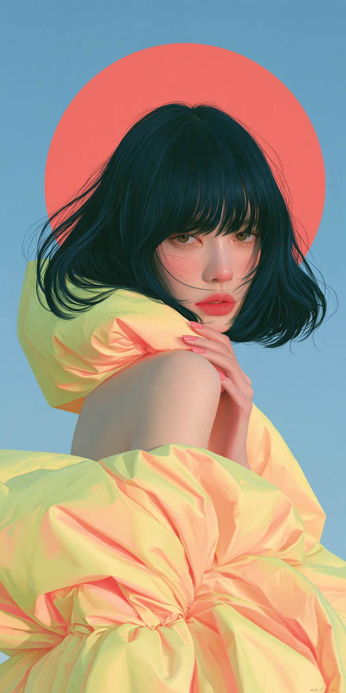
午后回望
人物插画
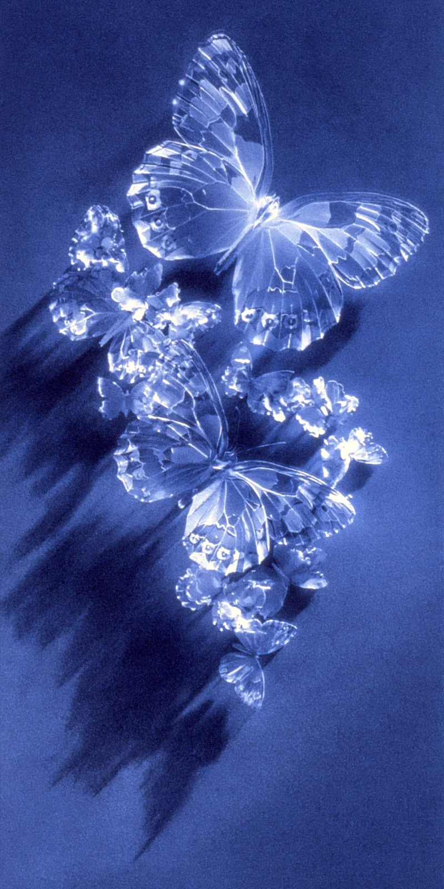
蓝色蝶梦
材质实验
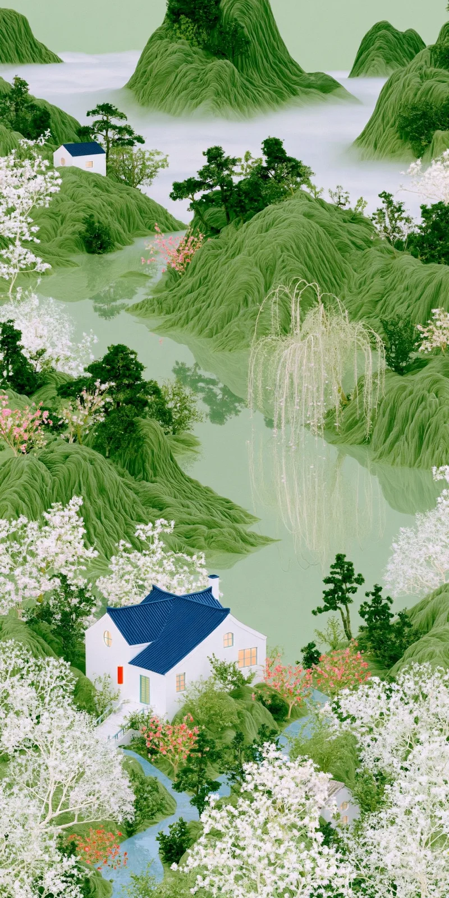
山居花间
场景想象
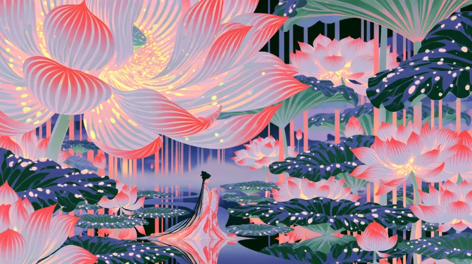
花园的另一种尺度
幻想场景
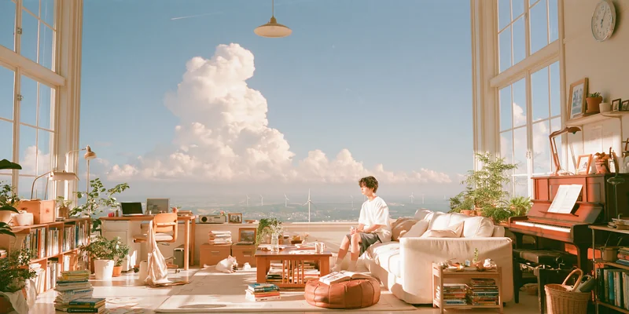
海边的房间
空间叙事
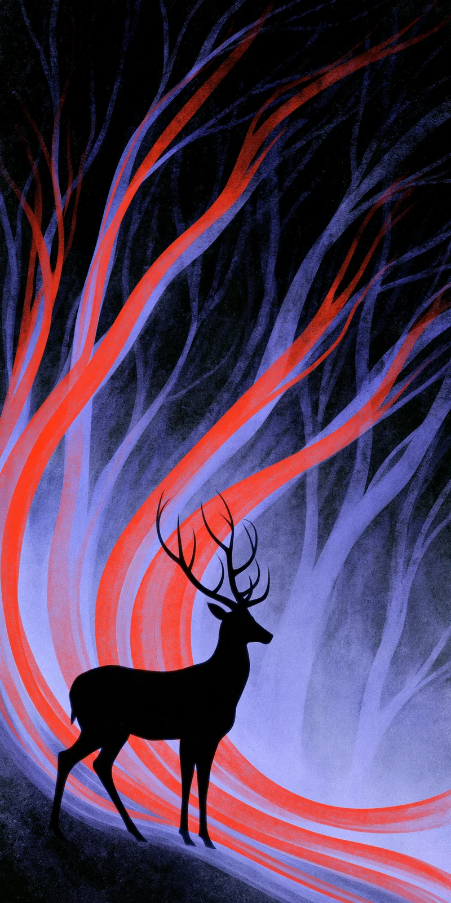
林间的红与蓝
色彩实验
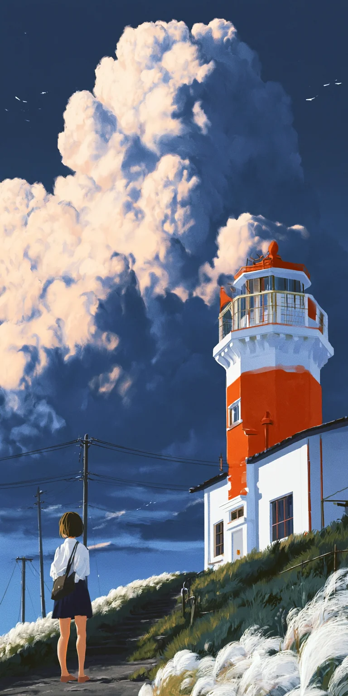
灯塔与云
场景插画
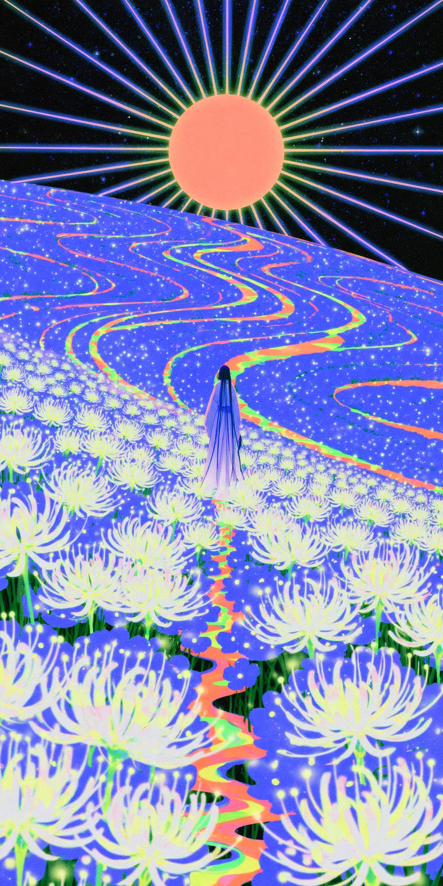
循光而行
装饰构图
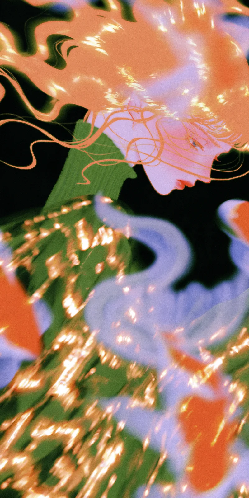
星光流线
抽象实验
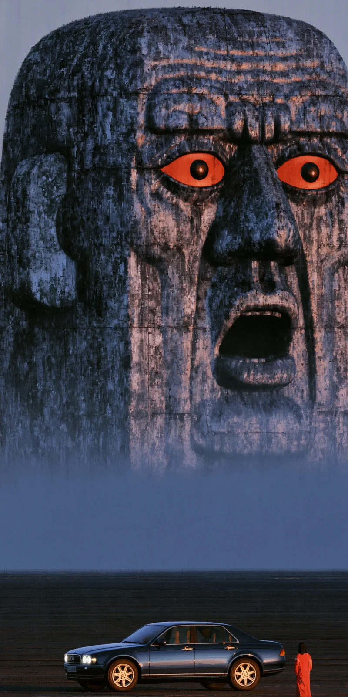
石像之下
超现实场景
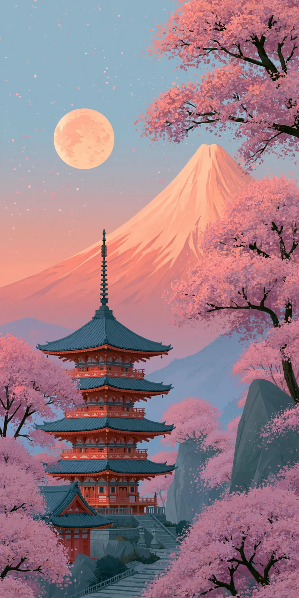
月下山色
风景插画
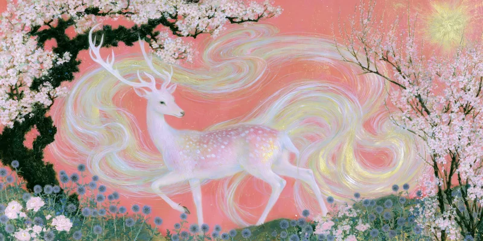
花间白鹿
幻想生物
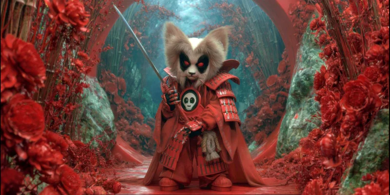
红林小武士
角色想象
霓虹之鹿
光感实验
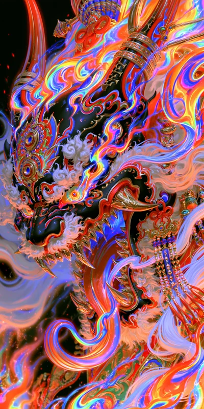
流彩之龙
装饰构图
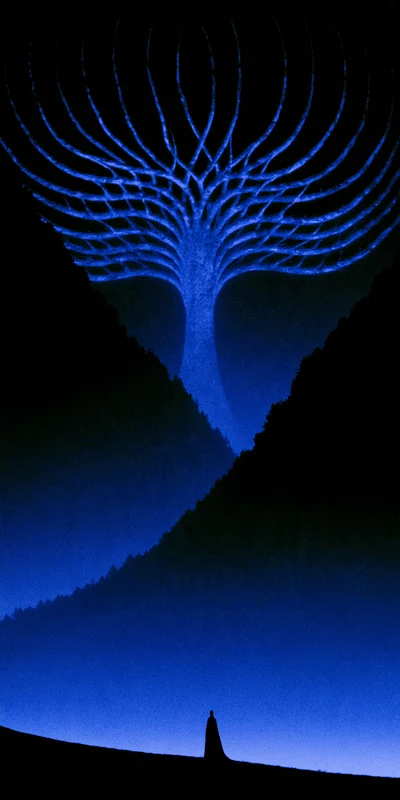
蓝色回响
抽象实验
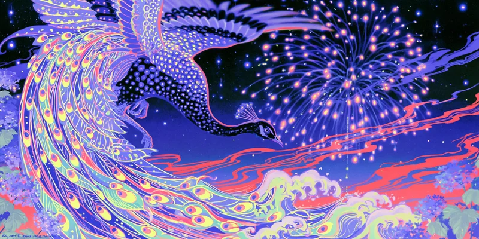
幻羽流光
幻想生物
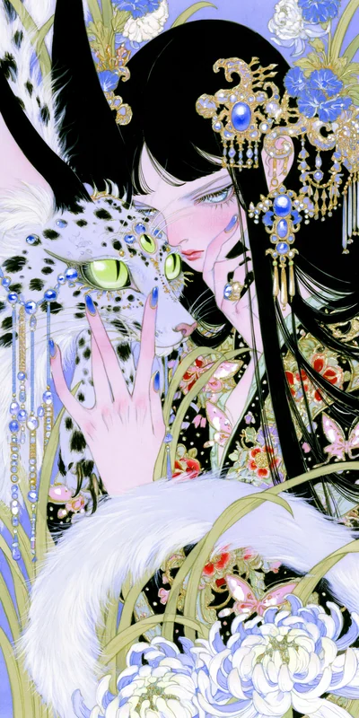
花影之间
人物插画
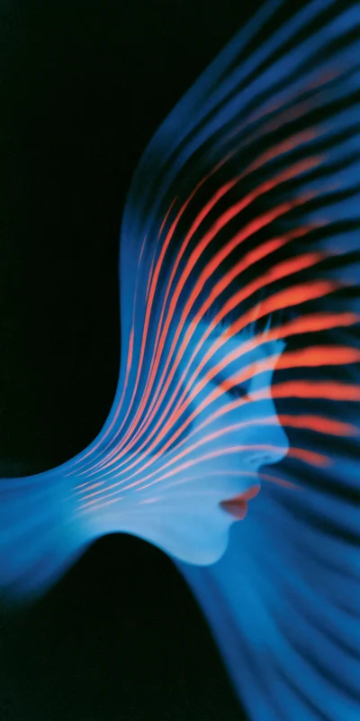
风的形状
抽象实验
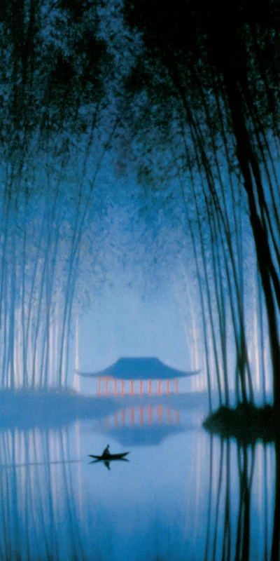
竹影泊舟
东方场景
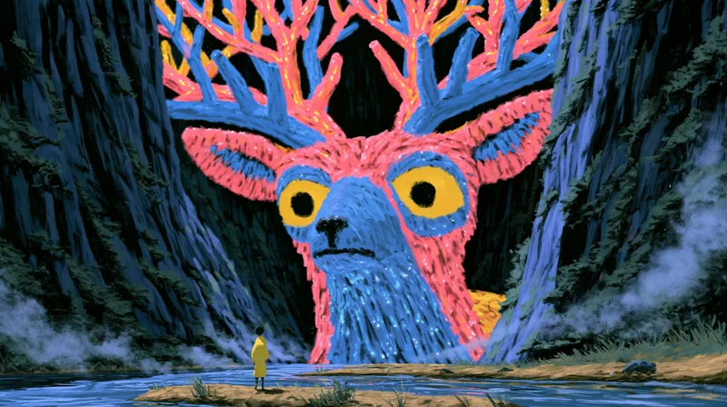
林中凝视
幻想生物
风中回身
人物影像
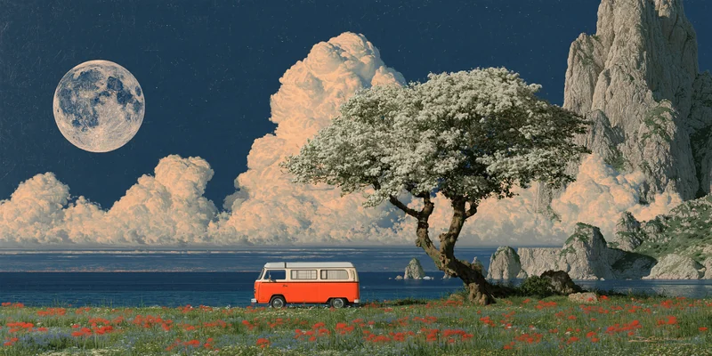
月下停泊
场景想象
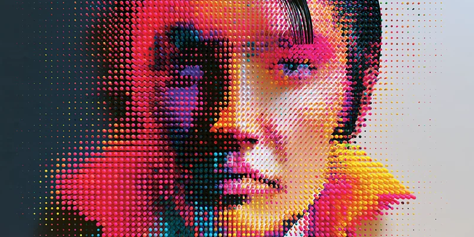
像素肖像
视觉实验